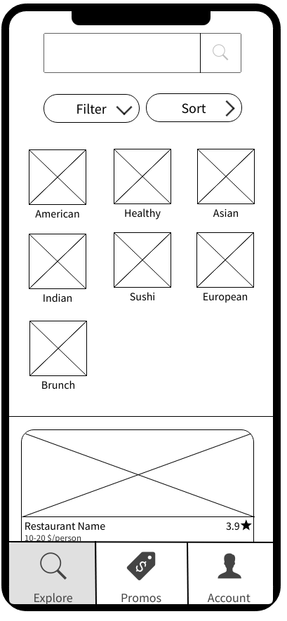
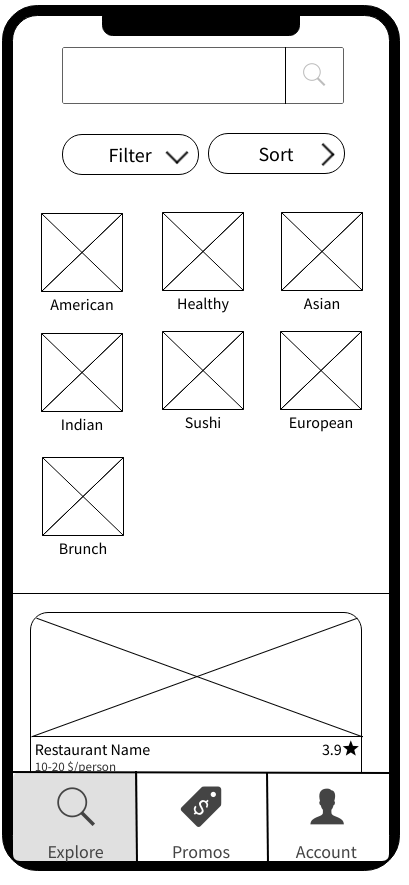
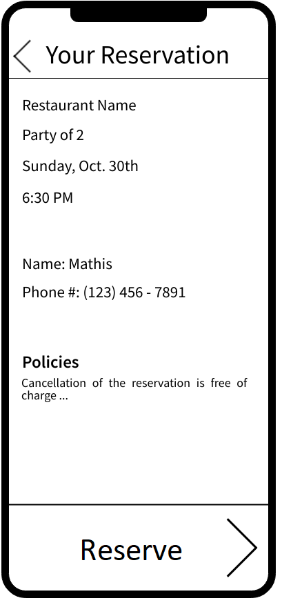
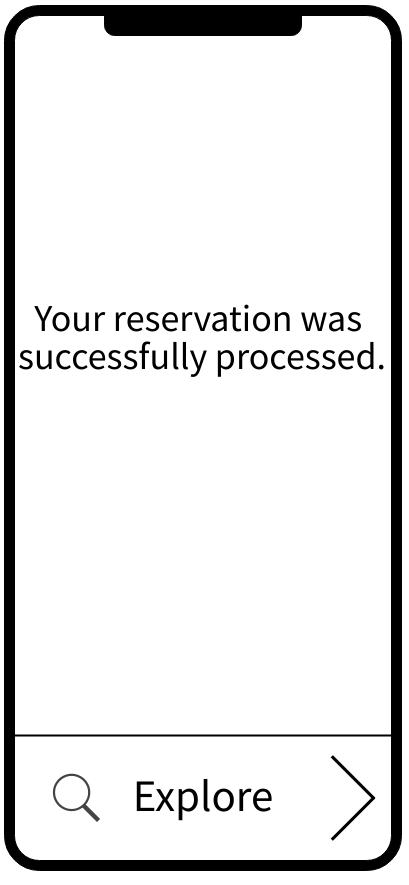
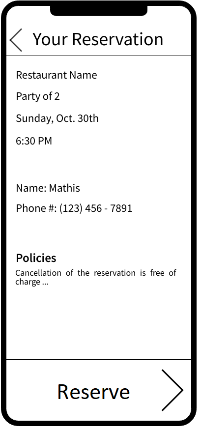
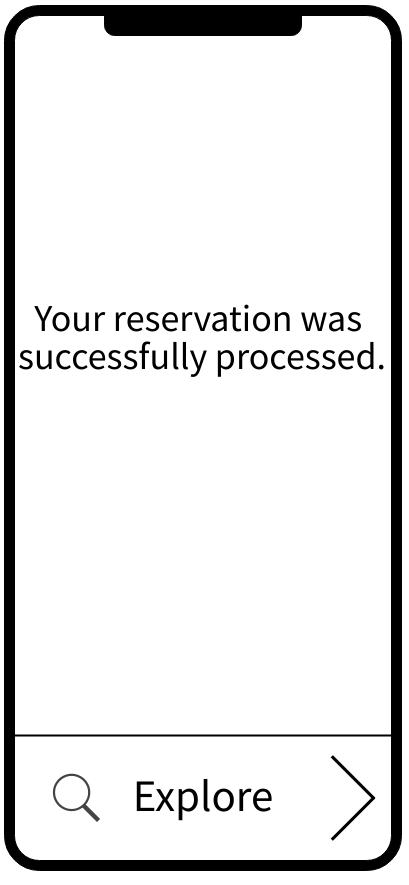
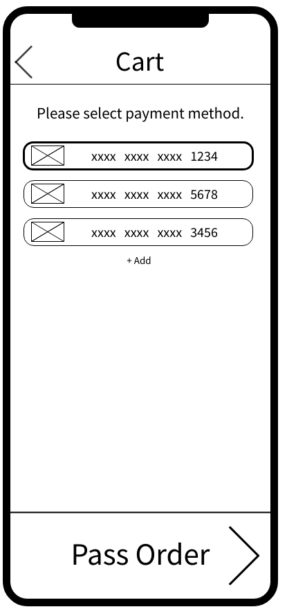
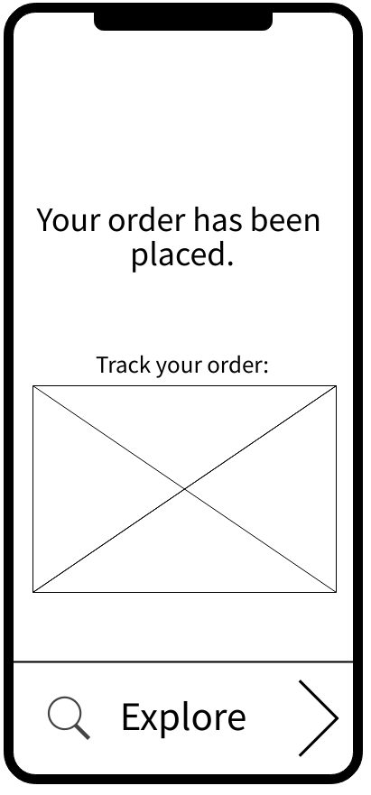
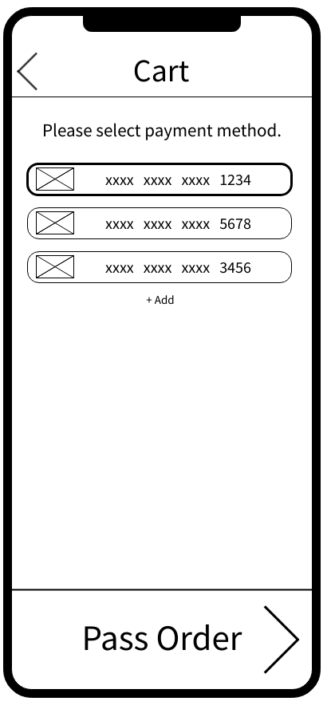
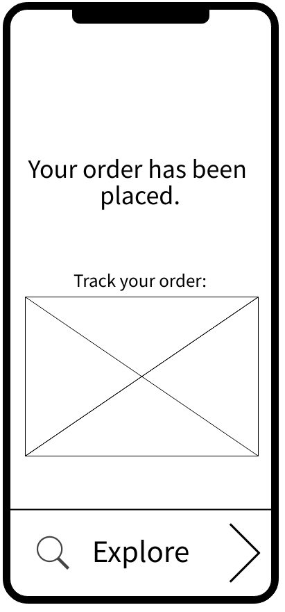

Understanding the Problem
The measures and restrictions that Quebec had to put in place in the last years to deal with the
global Covid-19 pandemic severely impacted its economy. One sector in particular that has suffered great
losses is the food services.
Local restaurants had to quickly adapt to constant shutdowns and re-openings if they wanted to survive
through this crisis. This is why now more than ever it is important to help these businesses to recover. To
increase their revenue and lower the consequences of high inflation they need to maximize their
accessibility and their visibility among the population. Even if some apps already exist which allow people
to discover restaurants around them, these apps have multiple shortcomings. Most of these shortfalls are due
to the fact that such applications are owned by big corporations whose primary goal is to make profit for
themselves. This negatively impacts the UI of the application and limits the features offered.
Application Concept
To help local restaurants recover from the difficulties of the past few years, we decided to design a mobile
application. Its goal is to let people of Quebec discover restaurants around them in a similar way to Uber
Eats, DoorDash, and SkipTheDishes. However, our application focuses only on local restaurants which means
franchised restaurants are excluded from it.
The way that we decided to support local businesses through our application is by maximizing the clientele
for them. This means that during the whole design process the client was considered as the main target
audience. Designing with this target audience in mind allows us to have a final product that is practical,
simple, and appealing to use. If those are all qualities our product has, there should be more people
ordering from and reserving tables at local restaurants which should help them get through the rough patch.
Research
Market Analysis
There already exist multiple applications that allow customers to explore restaurants near them and directly
choose between the delivery or pickup options. The most popular ones share a lot of similarities in their
design and in the features that they offer. This also means that they share some shortcomings which mostly
come from the fact that their primary focus is to generate profit for themselves. The following table
captures the analysis of the three biggest food apps used in Quebec: Uber Eats, DoorDash, and SkipTheDishes.
| Features | |
|---|---|
|
|
| Strengths | Shortcomings |
|
|
Survey
Survey Questions
Analysis
User Personas
As was mentioned previously, our target audience is the clientele because we want to increase their numbers to help the local restaurants. This is why designing for the user experience of people looking to order some food or reserve a table at a restaurant is our main goal. To get a better understanding of those who will use our application from the point of view of the buyer, we created three user personas.
Leila
Leila is living through a very stressful period of her life. She has a lot on her plate and this is why sometimes, she lacks motivation to get things done. Exploring local restaurants new to her is something that she enjoys, so ordering food through our application would be considered as a treat to her. This is a good way she found to motivate herself to work hard on her classes. It is important to keep in mind that health is important to her, so she is always looking for healthy food options in the menus. It is also relevant to think about the fact that she is still a student which means she probably does not have a lot of money. So, the Promotions tab of EatAround is something she finds very useful.
Liam
Liam is a young professional who is very driven by his job. Success is his most important goal, but because of that he often lacks time for things other than his work. He represents the target audience that does not have time to cook but has more than enough resources to order food daily. Speed and efficiency are the things Liam is looking for when he orders food, so the filtering and sorting features of EatAround is something he is expected to use very much.

Robert
Robert is playful and spontaneous, but the thing he values most in his life is his family. He tries to constantly put effort into his marriage because he does not want it to become boring and monotonous. To keep some spark between him and his wife, he often organizes surprise dates for her. The EatAround application is interesting to him because it gives him the opportunity to see cute, local restaurants around him and reserve a table right away at the spot he chooses. His curious nature and his goal to keep his wife happy is what drives him to use EatAround.

User Journeys
User journey , also known as customer journey map, is a diagram that visually illustrates the user flow through your site, starting with initial contact or discovery, and continuing through the process of engagement into long-term loyalty and advocacy. It is a path a user may take to reach their goal when using your website. Constructing them, helped us to deliver a better user experience according to their expectations.
Leila
Leila is living alone and working full time makes her eat mostly outside. She tries to keep her diet healthy. In her experience with our app, choosing a restaurant and payment method makes her lost and unsure. She sees many restaurant options and is not sure whether our deals are actually good deals or not. In order for the user to have a better experience we have to make sure our deals are actually good and price worthy. In many competitor applications, the deals are not that advantageous. In Leila's case, we have to make sure our app offers multiple payment methods, so that she can pay with the method she prefers.
Liam
Liam is a hardworking businessman who works from home. Most of the time he does not have enough time to cook. He heard about our application and decided to give it a try. He mostly felt depressed and annoyed while choosing a restaurant, sorting by the delivery time and order confirmations. He has a specific time to take his lunch, and what is important for him is to order his food as quickly as possible and receive it on time. As a developer, we have to make sure that users like Liam who are in a hurry, won’t feel frustrated and can order quickly. Liam was annoyed by the fact that in our app the user should pass through multiple confirmation pages before the order is finalized, but those are important steps in the application to make sure the user will not order by mistake or to the wrong address.

Robert
Robert is planning to have a birthday party for the weekend. In the previous weeks, he asked his friends if everyone was available to attend. He downloaded our app to use the “Table reservation” feature. Everything went as planned until he tried to book a table in a specific restaurant, at some point he got mad because the date he selected was not available and he was worried that he may not be able to find a table for the weekend. By using the available option, he managed to find a table for Sunday instead of Saturday. In Robert's case, we found that we have to make sure once a date is not available, make it blocked out so the user will not need to come back again. We worked on this issue in our later design steps. We decided that instead of two separate pages one of which tells the user that the date he has chosen is unavailable, there will be only one page which will be dynamic.
Flowchart
After the insights into what type of people will use our application and what they will feel while doing it, we needed to start thinking of how our application will work. We decided to use a user flowchart to get an idea of what the flow of EatAround will be. This is why we included all actions that can be performed by the user at different stages of the application use. This flowchart gives an initial structure to our application and even helps figure out some conditions that we will have to verify for some of its pages.
Design Process
Sketches
First, to get an idea of how the application will be structured and what content will go
where
we made some sketches. This is a low-fidelity prototype to which changes were easy to make. This allowed
us
to brainstorm as we were drawing them.
Here we have sketches for the registration page with the cellphone number and the explore page with two
of its features, filtering and sorting:


Here we have sketches for the Promotions and My Account tabs along with the adding a payment feature and tracking your order feature:


Here we have sketches for the reservation of a table at a restaurant feature:


Here we have the sketches for the reservation's details page along with the different pages that allow a customer to order a delivery:


With our sketches we tried to make the application as consistent and as intuitive as we could. All
buttons
that allow to progress in a sequence are placed at the bottom with an arrow pointing to the right. We
still
kept in mind to allow the user to go back in his steps if he ever wants to change something or make sure
he
entered the right thing. The button for this 'Go Back' feature is placed in all of the sketches at the
top
with an arrow pointing to the left.
We also tried to use many icons in our sketches in addition to the written text that helps the user
understand what each button does. Having the text and the icon decreases the chances that the user's
expectations of a button's functionality are not in accordance with what the button actually does.
These skectches represent the initial design we had for our application, but in the following steps
there
were some improvements made.
Wireframes
By constructing wireframes using the sketches previously drawn we got a better idea of the structure of
different pages. We also were able to include some improvements in the design which result in better
user
interface and a better user experience.
For the starting page we added the entered phone number needed to register to the application because
the
Get Started button should be absent if no number was entered. This is done to avoid user's confusion, so
that he does not try to click on a button that won't work for him at that stage. The Explore tab with
its
two functionalities (filter and sort) stayed with the same structure as in the sketches, but now it
looks
much cleaner.
 


The Promotions tab in the wireframes did not change from its original sketch either.
My Account tab, on the
other hand, had multiple improvements added. First, toggle buttons were added to the Orders and
Reservations
sections. This allows the user to see not only his current orders and future reservations, but also to
navigate through his history. Users expect this traceability because most of the applications on the
market
offer this functionality. Second, the Remove button in the Payment Methods section was placed on each
specific card to avoid unnecessary steps like selection of cards that you want to remove. The Add button
stayed at the same position, however.
To the Add Payment Method page the Postal Code field was added as it is something relevant to adding a
payment method in some cases.
On the Track Your Order page the thing that was improved is the format of status visibility. We decided
to
include all stages of the order delivery to give a better understanding to the user as to where he
stands.

For the Table Reservation pages, one of the sketches was excluded from the wireframes because it added
some
unnecessary steps to the process which could of damaged the user experience. Instead, it was decided
that
the page where the user selects the date and time of the reservation will be dynamic. It would allow the
user to choose only dates and times that are available with appropriate indications.
The Restaurant's Details page had a small modification as to how the schedule is presented. This is due
to
one of the points we concluded with the survey we conducted as the restaurant's schedule one of the
things
people had the most difficulty finding on similar apps. We decided to make the opening hours of the
restaurants obvious for the user. The Reserve Table button presentation also changed. We decided that
because the reservation feature is one of the main functionalities that our application has to offer
that
others don't have, we should emphasise it.
 




For the Order Delivery feature pages of EatAround, the wireframes were pretty consistent with the sketches drawn previsouly.
 



Color Palette
The color palette we chose for our application consists of only three colors: black, white, and a specific shade of blue.

The reason behind this simple color palette comes from one of the strengths we observed in applications
similar to our own. The colors used by big food delivery applications are mostly limited to three or
four
colors. This avoids overwhelming the user and keeps all of the user's attention on beautiful pictures
restaurants choose to represent themselves. As our main goal is to encourage people to discover local
restaurants around them, we want to keep their focus on what these restaurants have to offer.
Another reason behind this color palette is to give a professional look to the application. Local
restaurants are rarely perceived as professional by the average user, so we wanted to shift this
negative
perception. Even if most of the local restaurants are relatively small and do not have as much resources
as
some big chain restaurants, the quality of their food and the experience they can make you live are even
better.
The choice of the blue shade to accompany the black and white colors was done because of how it is
perceived. Blue is a color that represents strength, relaxation, and reliability. We wanted to make the user
feel as he does not have to stress about anything when using our application. Of course, we also wanted the
user to trust our application, so this notion of reliability transmitted through the blue color was perfect
for that.
Typography
To be consistent with the professional look we wanted to give to EatAround, we chose ‘Roboto’ as the main font. It is easy to read which is important so that the user does not get confused and it has a strength to it which gives the user a feeling of reliability.
Icons
In EatAround, we decided to use many icons in addition to the visual text a person can read to make the interface more intuitive and appealing. Most of the icons were chosen to have soft/rounded edges to make it consistent with the rest of the app. In other words, most of the icons are used as buttons and buttons that are not icons all have rounded edges in the application. This was a choice made to avoid the application being perceived as too aggressive.
Final Design
For our high-fidelity prototype, we created one using Figma. You can have an insight into our final design and see how some of the functionalities EatAround has to offer will work:
Final Improvements
As you noticed while going through our high-fidelity prototype, in addition to the visual details of the
application there were some other improvements that were added since the wireframes phase.
First, in the My Account tab, there were some additional buttons that were added like Track for Orders
and
See Details and Cancel for Reservations. This offers some additional features that were missing in the
previous stages of the design process, but we judged essential to offer the right functionalities and to
make the design more intuitive.
Second, some of the wording for the buttons allowing the user to go from one stage to the next in the
delivery ordering or table reserving processes was changed. This was done to make the application more
consistent.
Third, on the Track Your Order page, for the status bar of the delivery, we decided to include both
icons
and text for the different stages. This makes it much clearer to the user what is happening with his
order,
and makes it consistent with other buttons in the application like the main tab menu for example.
The design choice for the maps was decided to focus mainly on the two significant locations (restaurant
and
delivery address) and the route between them. That is why the map around the route is in the black
shades
and the route is put in a shade of blue. This was not implemented on the Delivery Address page because
at
that stage our main focus is for the user to enter the right address, so it is important he can
recognize
the streets around his house.
Unimplemented Functionalities
Some functionalities were not shown in the high-fidelity prototype because some were too complicated to implement in a prototype like this one and some other because we did not judge them as important to show as those that were included. The Filter and Sort buttons in the Promotions tab are supposed to function in the same way as they work in the Explore tab. Clicking on a specific promotion, on the other hand, is supposed to get the user to the details page of the specific restaurant with the promotion applied, but this is something that was a little more difficult to show in the prototype. The Cancel button and the Remove button in the My Account tab are other features that were not included in the prototype, but their functionality is self-explanatory. On the Restaurant's Details page the Call Resturant button in the form of the cellphone icon was not implemented either, but it is supposed to redirect the user into their phone app with the resturant's phone number automatically filled in.
Conclusion
This project was really interesting to work on because it allowed us to put in practice some concepts that we learnt in class only in theory. Applying the user personas and their journeys, constructing the flowchart and designing the prototype through the sketches and wireframe stages for an application feels completely different than when you only apply it to a small example in class. Designing the UI and for the UX with the user in mind is something that is much more difficult to do than what it seems and we are happy to have gotten this opportunity to learn.